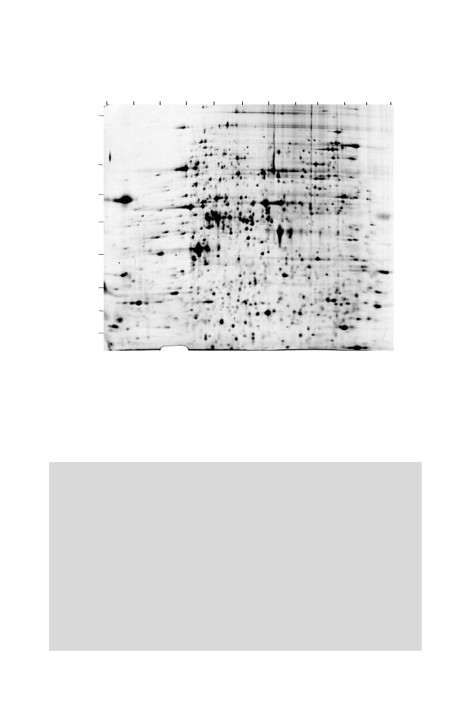

1.5 Experimental Methods
33
10.0
7.5
6.3
6.0
5.8
5.5
5.2
5.0
4.0
3.0
9.0
8.0
100
60
50
40
35
30
25
20
p
I
Molecular W
eight
Fig. 1.13.
Proteins extracted from yeast resolved by two-dimensional gel elec-
trophoresis and visualized by silver staining. Molecular weights are in kilodaltons.
Over 1000 spots were detected, corresponding to about 20% of all yeast genes. The
abundance of proteins in the gel is approximately proportional to the spot intensity.
Reprinted, with permission, from Gygi SP et al. (1999)
Molecular and Cell Biology
19:1720–1730. Copyright 1999, the American Society for Microbiology. All rights
reserved.
lin species directed against the antigen). The different immunoglobulins may
“recognize” or bind to different specific regions of the antigen (different pro-
tein domains, for example). Different regions of the antigen recognized by
distinct antibody species are called
epitopes
. A preferable but more expen-
sive and time-consuming procedure is to produce a
monoclonal antibody
,
which is a single immunoglobulin species that recognizes a single epitope. In
this procedure, a mouse is immunized with the antigen, and cells from the
spleen (where antibody-producing cells mature) are removed and fused with
an “immortal” multiple myeloma (tumor) cell line. This produces hybrid cell
lines (hybridomas), and individual hybridoma cell lines may produce a single
antibody directed toward a single epitope from the original antigen. Such cells
can be used to produce the antibody in tissue culture, or they can be injected
into mice to produce the desired antibody in vivo. This procedure obviously